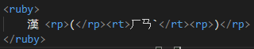

This elememt defines a ruby annotation.
It provides parenthesese around ruby text., to be shown by browsers that do not support ruby annotations.
Use rp together with ruby and rt.
This element consists of one or more characters that need explaining/pronunciation, and an rt element that gives that information and then an optional rp element to define what to show for browsers that do not suppport ruby annotations.
This is mostly used with japanese annotations.
This is how its coded:
None
The global attributes are supported. Global
The event atttributes are suported. Event Attributes